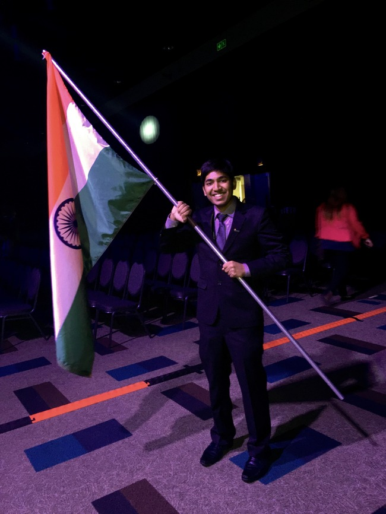
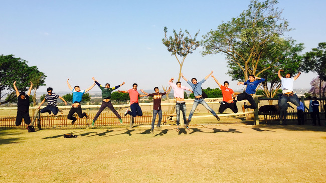

What is the significance of the ENACTUS WORLD CUP? Is it just crowning the team that has the best projects and presentation? Is it just a formality to choose one winner out of the 36 champion teams? Or is it just a big shot event to show the world how grand this organization is?
For me, it turned out to be much more than that. I will tell you why.
Imagine going to a new and a different country, with a team for which you can be anyone or do anything, your nation’s flag in your hands and carrying with you the hopes of the people of your country. That patriotic feeling, you feel your heart beating, listen yourself breathing, is unparalleled. On your way, you meet new people of different nationalities, coming to compete with you, each carrying his/ her aspirations and their country’s hopes.

Quite ironically, when you meet them, there isn’t a feeling of competitiveness or rivalry, rather, there is just admiration, respect and a desire to know more about them. You realize that everywhere in this world, deep inside, everyone is actually the same. Their cultures, nationalities, traditions might be different, but each and every person’s heart is beating the same way, is having the time of their life, meeting new people, dancing, singing and along with it, sharing laughs and most importantly ideas that can transform this society.

Here at the ENACTUS WORLD CUP, new bonds and relationships are formed, invitations are exchanged and ideas are nurtured. It brings out your spirit for doing social good to a whole new magical level. After meeting and listening to people from different countries and continents, and seeing their enthusiasm to create a positive change in this world, you realize one very important thing. That if you really want, no matter who you are and where you belong to, no problem can stand before you, unsolved. All you need is the real desire and dedication to solve that problem.
However, the best part of the world cup is bringing the members of the same team close to each other. When you see your team’s presentation, you feel proud to be part of that team, satisfied for all the time you have spent. When others congratulate, you realize the potential your team holds. And when all is done, the happy moments you share with them fills you with that relaxed and homely feeling that we all yearn for. You just want to go on a long drive with them. There is a warmth shared between each and everyone, which you can feel even if no words are spoken. In the end, all you want is to be them.

When you see a team transforming the lives of those in need, no matter whether you are part of them or not, you get a feeling of contentment and joy. So it actually doesn’t really matter whether your team wins or not, since we all win when lives are positively impacted, due to the efforts of each and every team.
You actually feel bad when it all ends, because something connected us, related us. And that something is missed after the event ends. A bond was formed that will last a lifetime.
Vasudhaiva kutumbakam. In Sanskrit language, it means that the whole world is one family. We all teams might be very far from each other, our ways of working might be different, we might know nothing about each other, but we all are one big family bonded together by the same desire- that every morning when this world wakes up, more and more people are happier than before. And the ENACTUS WORLD CUP motivates you even more to achieve this goal.